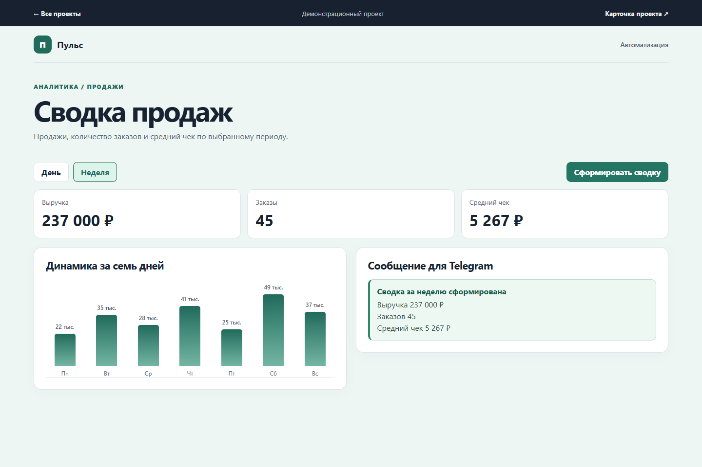

Автоматизация / Демонстрационный проект
Автоматическая сводка продаж
Руководителю нужна сводка продаж и заказов за выбранный период.
Что реализовано
Собрал переключение периода, расчёт показателей из тестовых продаж и предпросмотр сообщения для Telegram.
Что показать клиенту
Выберите неделю и сформируйте сводку.

Проект работает в браузере на тестовых данных. Сторонний аналог на GitHub ↗

